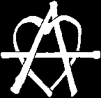

 *
**these three by colapunk *

for anarchy. It is a monogram that consists of the capital letter "A"
surrounded by the capital letter "O". The letter "A" is derived from the
first letter of "anarchy" or "anarchism" in most European languages
and is the same in both Latin and Cyrillic scripts. The "O" stands for
order. Together they stand for "Anarchy is Order," the first part of a
Pierre-Joseph Proudhon quote.